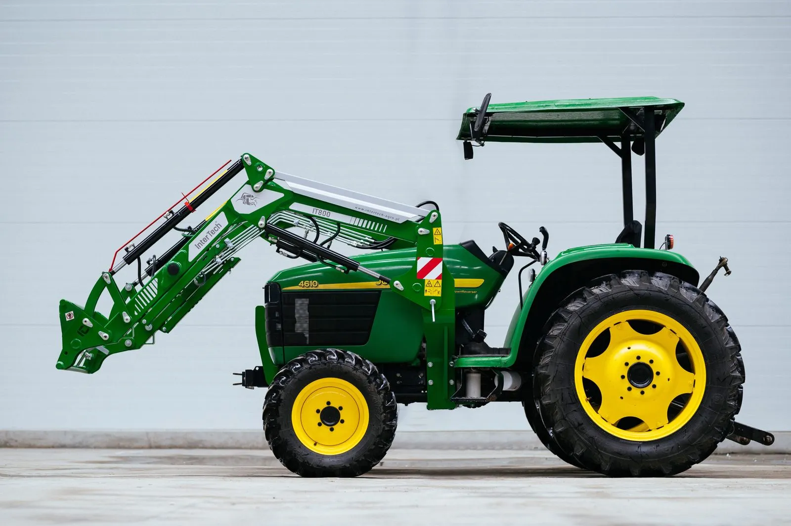

Konfigurátor
Galerie konfigurátoru
Podívejte se, jak vypadají naše čelní nakladače na různých typech traktorů. Vyberte značku a model svého traktoru a uvidíte, které nakladače InterTech se na něj hodí.

Výběr nakladače
Výběr typu čelního nakladače podle traktoru
Klikněte na značku, najděte svůj model a otevřete vhodný nakladač nebo fotky z montáže.
Nenašli jste svůj traktor? Ozvěte se nám na +420 605 434 314 nebo info@agripol.cz.
Galerie konfigurátoru
Takhle to vypadá v praxi
Podívejte se, jak vypadají naše čelní nakladače na různých typech traktorů — 41 fotek z montáží. Kliknutím fotku zvětšíte.
Zetor
John Deere
New Holland
Valtra
Nevíte si rady s výběrem?
Zavolejte nebo pošlete typ traktoru. Doporučíme nakladač i výbavu a řekneme férovou cenu.